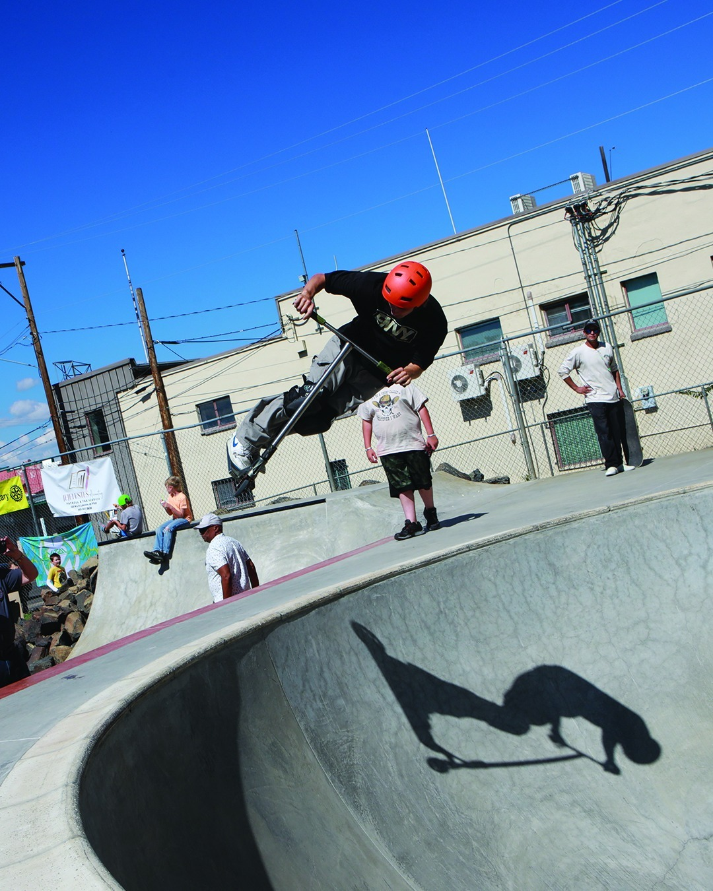
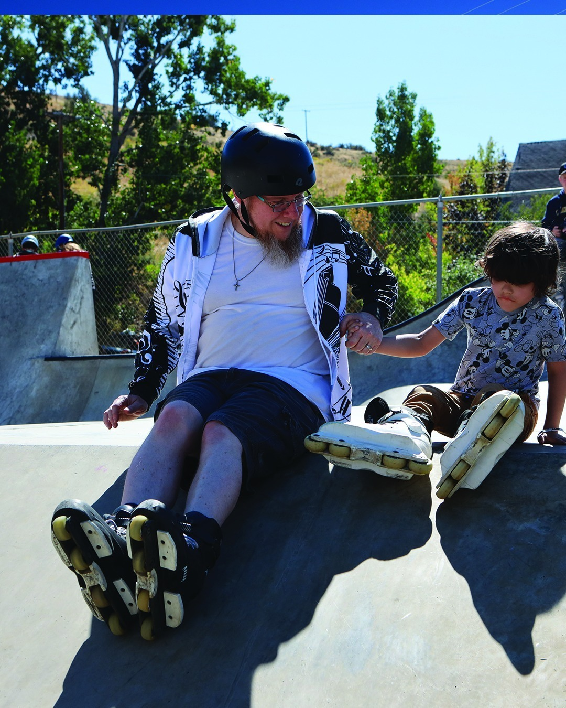
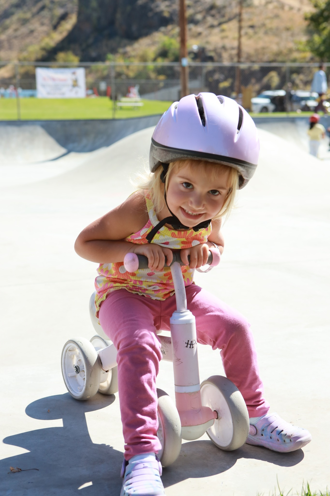
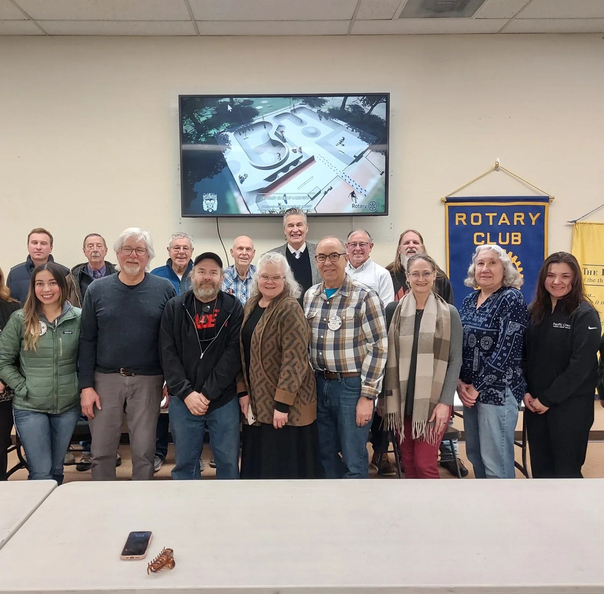
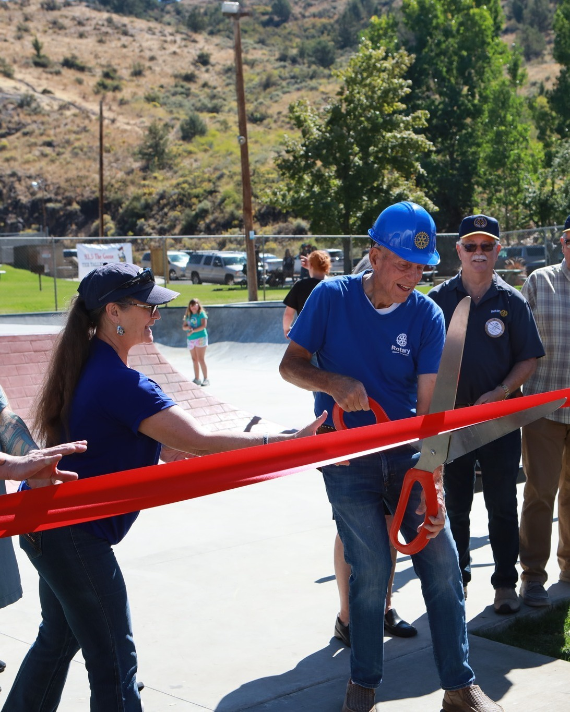

Small Town, Big Ambitions: Lakeview's New Wheels-In-Motion Skatepark

Photo courtesy of Oregon Community Foundation
About four miles into the road routes — just as the streets of Lakeview give way to open country — riders this year will roll past a brand-new landmark that didn't exist the last time we held this event. It's a skatepark. And the story of how it got there is, in many ways, the same story we love telling about Lake County: a small town deciding to do something big, and then actually doing it.
The Wheels-In-Motion Skatepark opened in downtown Lakeview on September 13, 2025. It sits on what used to be a cracked, abandoned tennis court — a site most people had stopped seeing entirely. Today it's a 6,000-square-foot concrete masterpiece designed by Dreamland Skateparks, and it's already become one of the most-used public spaces in town. For Tour de Outback riders, it's a roadside reminder of what this community is capable of when it sets its mind to something.
It Started With a Simple Question

Photo courtesy of Oregon Community Foundation
In April 2022, a handful of Lakeview Rotary Club members met for coffee and asked an honest question: what does our town need that we don't have? The answer that kept coming up wasn't another government building or a chain restaurant. It was something for the kids. Specifically, something for the kids who were already skating in parking lots and on broken pieces of curb because they had nowhere else to go.
By the end of May 2022 — barely six weeks later — Rotary members stood in front of the Lakeview Town Council with survey results and community petitions in hand. The case they made was simple: a skatepark would give local youth a safe, inspiring space to ride, connect, and belong. The Council agreed in principle, and Rotary took the lead on making it real.
Building Consensus (the Hard Way)
What followed wasn't a straight line. A letter from the swim team raised concerns about the proposed downtown site. Other residents argued the spot should become pickleball courts instead. Rotary's response was the only one that ever really works in a small town: listen, do more outreach, hold more conversations, and let the community talk it through.

Photo courtesy of Oregon Community Foundation
On February 16, 2023, after months of additional surveys and public meetings, the Town Council formally approved Rotary's proposal for the downtown tennis court site, signing a five-year lease for one dollar. Rotary now had a location, a mandate, and a deadline they had set for themselves. What they didn't have yet was the money. By year's end, they had raised $22,000 and selected Dreamland Skateparks — the Oregon-based design-build firm whose parks are landmarks across the West Coast — to design the project.
In November 2023, the Dreamland team drove out to Lakeview to hear directly from the people who would actually skate the park. Local youth, parents, and Rotary members spent an evening sketching ideas, listing favorite features from other parks, and talking through what would make this one feel like Lakeview's own. That input shaped the final design.
Then the Whole Town Showed Up

Photo courtesy of Wheels-In-Motion Skatepark
By mid-2024, Rotary's fundraising had climbed past $325,000. The money came in pieces: small individual donations, business sponsorships, grant awards, and one significant gift after another from people and organizations who believed in what was being built. Volunteers cleared the site, took down dead trees, dismantled the old court surface, and secured rebar before construction-material prices could climb any higher. It stopped being a Rotary project and became a town project.
By spring 2025, Rotary had locked in a $585,000 construction agreement with Dreamland. Groundbreaking happened on May 12, 2025. Three months later — on August 9, 2025 — local skaters were already testing the freshly poured bowls and ramps. And on September 13, 2025, the Wheels-In-Motion Skatepark officially opened to the public.
A Record for the Region

Photo courtesy of Oregon Community Foundation
At $585,000 of locally-raised funding and built capital, the Wheels-In-Motion Skatepark is the largest capital project in Rotary District 5110's history — a district that covers most of Oregon and parts of northern California and Idaho. That's a lot of Rotary clubs in a lot of communities. The fact that the largest one of all was funded and finished by a town of about 2,300 people in southeast Oregon says something.
It also says something about the timeline. From the first conversation in April 2022 to the first kickflip in August 2025, the entire project took less than three and a half years. That's faster than most county-line road improvements get studied. It happened because the people pushing it didn't wait for someone else to do it. Rotary members, Dreamland Skateparks, Lakeview Town Council, local business owners, ranchers, parents, and the kids themselves all leaned in.
One of the local skaters who watched the park come to life put it this way:
“When I skate, I feel like a little kid again. As soon as I lace up my skates, all my worries disappear.”
That's the line that ends up on the project's homepage, and it's the line that probably says it best. A skatepark isn't just concrete and rebar. It's permission — permission to come outside, try something hard, fall, get back up, and try it again. For Lakeview's kids, that permission slip is now permanent.
What You'll See From the Saddle
On race day, after rolling out of the Lake County Fairgrounds and crossing through downtown Lakeview, the road routes pass right by the new skatepark. It's hard to miss — the long sweep of polished concrete, the swooping bowls, the kids who almost always seem to be out there using it. Take a look as you go by. You're not just seeing a recreation facility. You're seeing what happens when a small town decides that yes, our kids deserve this, and then refuses to let go of the idea until it's built.
That same persistence is exactly what makes the rest of this region worth riding through. The Oregon Outback you'll see in the saddle — the working ranches, the immaculately maintained byways, the volunteer search and rescue crews, the welcoming small towns — doesn't happen by accident. It's the result of people who show up, year after year, to make it that way. The skatepark is one visible example of a hundred quieter ones.
Learn More About the Project
Visit wheelsinmotionskatepark.com to see more photos, learn about the people behind the project, and find out how you can support future improvements.
Visit the Project Site